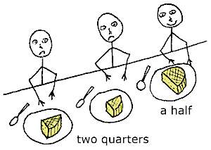
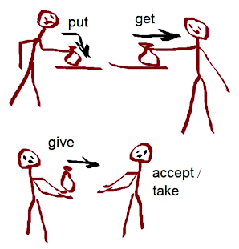
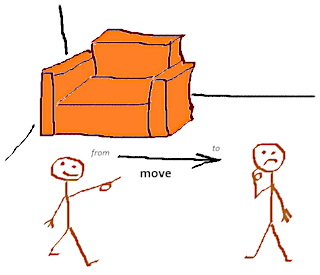

HomeIndex
HomeIndex GitHub
</>
GitHub
</>
Лексика общая
| Слово | Перевод | Пример | Перевод примера |
|---|---|---|---|
| what? | что? | What do you do? | Что ты делаешь? |
| какой? | What kinds of animals do you prefer? | Какие виды животных ты предпочитаешь? | |
| who? | кто? | Who is that guy? | Кто тот парень? |
| whom? | кому/кого? | Whom are you waiting? | Кого ты ждешь? |
| whose? | чей? | Whose is this cat? | Чей это кот? |
| where? | где? | Where are you? | Ты где? |
| куда? | Where do you go? | Куда ты идешь? | |
| откуда? | Where are you from? | Откуда ты? | |
| when? | когда? | When will you come back? | Когда ты вернешься? |
| why? | почему/зачем? | Why am I so beautiful? | Почему я такая красивая? |
| which? | который? | Which of these autos is yours? | Который из автомобилей твой? |
| how? | как? | How are you feeling today? | Как ты себя чувствуешь сегодня? |
| how many? | как много? | How many years have passed since then? | Сколько лет прошло с тех пор? |
| how much? | сколько? | How much time will it take? | Сколько времени это займет? |
Подсказка для запоминания слов where и when:
Слово what может быть использовано еще и в таком смысле:
What a beautiful child! — Какой красивый ребенок!
Quantity ['kwɒntıtı] — количество

| Количество | Неисчислимого | Исчисляемого | Неважно чего |
|---|---|---|---|
| Много | much | many | a lot of |
| Мало | little | few | — |
| Немного | a little | a few | — |
When I get older losing my hair many years from now... — Когда я стану старше, потеряю свои волосы много лет спустя...
Yes, I saw a rainbow ['reınbəʋ] a few days ago. — Да, я видел радугу несколько (немного) дней назад.
I had much money and I bought a lot of green cucumbers ['kju:kʌmbəs]. — У меня было много денег и я купил много зеленых огурцов.
There was little rain in the summer so we got few apples. — Летом было мало дождей, поэтому мы собрали мало яблок.
Can you please speak a little bit slower? — Можешь (пожалуйста) говорить немного медленнее?
huge [hju:dʒ] — огромный, гигантский
tiny — крошечный
Empty — пустой
Full — полный
Quality ['kwɒlıtı] — качество
important — важный
interesting — интересный
dirty — грязный
tasty/delicious — вкусный
wet — мокрый
dry — сухой
Температура:
cool — прохладный
cold — холодный
warm — теплый
hot — горячий
beautiful — красивый, прекрасный
It's a beautiful life. — Это прекрасная жизнь. (Ace of Base)
awesome ['ɔ:s(ə)m] — потрясающий, потрясающе
pretty ['prıtı] — милый, прелестный; привлекательный (также см. сюда)
Pretty woman — Красотка
ugly — безобразный, уродливый
kind — добрый
It's very kind of you. — Это очень мило с вашей стороны.
I always try to be kind to my students. — Я всегда стараюсь быть доброй с моими учениками.
friendly — дружественный
unfriendly — недружественный
My new team is friendly and supportive. — Моя новая команда дружная и поддерживающая.
This guy at the party looked very unfriendly, so no one wanted to talk to him. — Этот парень на вечеринке выглядел очень недружелюбно , поэтому никто не хотел с ним разговаривать.
to be friendly with yourself — быть в дружеских отношениях с собой
Однокоренные слова:
clever, intelligent — умный
wise — мудрый
gentle — нежный
strange — странный
— Don't you know who is that strange man outside? — Ты не знаешь кто этот странный человек
на улице?
— Don't worry, that's our neighbour ['neıbə]. — Не волнуйся, это наш сосед.
He is pretty kind, but you are right, he looks strange. — Он довольно добрый, но ты
прав, он выглядит странно.
nice — приятный
This is very nice of you. — Это с вашей стороны очень любезно/мило.
attentive — внимательный
attention — внимание
strict — строгий
sensitive — чувствительный
Don't be so sensitive! — Не будь таким обидчивым! (Не обижайся!)
proud — гордый
I am proud of my job. — Я горжусь своей работой.
ashamed — чувствующий стыд
Are you ashamed for having lied? — Вам стыдно за то, что (вы) солгали?
mad — сумасшедший, помешанный
It drives me mad. — Это меня сводит с ума.
rich — богатый
poor [pʋə] — бедный
A poor man's made out of muscle and blood. — Бедный человек состоит из мускулов и крови.

part — часть
This part of the house is going to be renovated. — Эту часть дома планируется отремонтировать.
piece — кусок
I was hungry but could find only a small piece of cheese and a bottle of wine in the fridge. — Я была голодная, но в холодильнике нашла только маленький кусочек сыра и бутылку вина.
slice — ломтик
I'm gonna cut this meat into thin slices. — Я собираюсь нарезать мясо тонкими ломтиками.
quarter — четверть
It's a quarter to five now. — Сейчас без четверти пять.
half — половина
I gave her half, and kept half for myself. — Половину я отдал ей, а другую половину оставил себе.
whole [həʋl] — целое
The whole day he felt not well.. — Весь день он чувствовал себя нехорошо.
consist of — состоять из...
Water consists of hydrogen and oxygen. — Вода состоит из кислорода и водорода.
the same — тот же самый
When listening to this music I feel the same way as you. — Когда я слушаю эту музыку, я чувствую то же самое что и ты.
Lately it seems to me that every day on the street I meet the same people. — В последнее время мне кажется, что каждый день на улице я встречаю одних и тех же людей.
Read and listen at the same time. — Читай и слушай одновременно (в одно и тоже время).
other ['ʌðə] — другой, иной
This is one cat and that is the other cat. They are not the same. — Это один кот, а то другой кот. Они разные.
You are so beautiful. This is probably because your parents loved each other. — Ты такой красивый. Это наверное потому, что твои родители любили друг друга.
each other/another — друг друга
each other — устойчивое выражение
another [ə'nʌðə] — другой, еще (один)
Образуется путем соединения артикля an и other, применяется к единственному исчисляемому объекту.
My glass is empty, I want another beer. — Мой стакан пуст, я хочу еще одно пиво.
Для сравнения:
I want the other beer. — Я хочу другое пиво.
different — другой, различный
As for animals and food, there may be the following situations:
Перевод:
Что касается животных и еды, могут быть следующие ситуации:
similar — похожий, подобный
Well you don't have my favorite bakes today. Can you suggest anything similar? — Так, у вас сегодня нет моих любимых булочек. А можете предложить что-нибудь похожее?
like — похоже на..., подобно, подобным образом
She looks very much like her mother. — Она очень похожа на свою мать. (Она выглядит очень сильно похоже на свою мать.)
I can jump like a frog. — Я могу прыгать как лягушка.
Like you I like music like this. — Как и тебе мне нравится музыка вроде этой.
Unlike you I dislike music like this. — В отличии от тебя , мне не нравится музыка вроде этой.
kind of — вроде, как будто, почти что
Иногда используют сокращения kind of = kinda ['kaındə].
I kind of thought so. — Я примерно так и думал.
unlike — в отличии от...
Unlike his father, he is tall. — В отличие от своего отца он высокого роста.
Note
Не путать с to dislike — не нравиться.
too — тоже, так же (для утвердительных предложений)
either ['aıðə, 'i:ðə] — тоже, так же (для отрицательных предложений)
I went there, too. — Я тоже пошёл туда.
— I don't like broccoli. — I don't like it either. — Я не люблю брокколи. — Я её тоже не люблю.
exactly — точно, как раз
To get the same result we need to use exactly the same calculation method. — Чтобы получить такой же результат нам надо использовать в точности такой же метод вычислений.
approximately/about [ə'prɒksımıtli] — приблизительно
To make this cake I need about a half kilo of flour and exactly three eggs. — Для этого торта мне надо приблизительно 0,5 кг муки и точно 3 яйца.
The traffic jam will end in approximately thirty minutes. — Пробка закончится приблизительно через 30 минут.
certain — определенный, конкретный, уверенный (= sure)
Usually candies are sweet but this certain one spicy. — Обычно конфеты сладкие, но эта конкретная конфета — острая.
Are you certain about tomorrow rain? — Ты уверен, что завтра будет дождь (насчет завтрашнего дождя)?
certainly/surely ['ʃʋəlı] — точно, определенно
Schwarzenegger will certainly/surely be back. — Шварценеггер непременно вернётся.
uncertain — неопределенный, неуверенный
I'm uncertain about my tomorrow plans. — Я не уверен относительно своих планов на завтра.
probably — наверное
perhaps — возможно, может быть
whatever — любой
hardly — едва
It was so noisy in the cafe that we could hardly hear each other. — В кафе было так шумно, что мы могли едва друг друга слышать.
some — какой-то (как правило что-то известное, но не сообщенное)
Let's meet tomorrow, I know some beautiful place. — Давай встретимся завтра, я знаю одно красивое место.
any — какой-нибудь, любой
If you have any questions please let me know. — Если ты имеешь какие-либо вопросы, пожалуйста дай мне знать.
no — никакой
What is there up ahead? — Что там впереди? — I have no idea. — Понятия не имею.
every — каждый, всякий
Every person has a name. — Каждый человек имеет имя.
Эти определители часто образуют производные слова.
| Основа | some | any | no | every |
|---|---|---|---|---|
| thing | something что-то |
anything что-нибудь |
nothing ничто |
everything всё |
| body | somebody кто-то |
anybody кто-нибудь |
nobody никто |
everybody все |
| one | someone кто-то |
anyone *кто-нибудь * |
no one никто |
everyone каждый |
| where | somewhere где-то |
anywhere где-нибудь |
nowhere нигде |
everywhere везде |
| time | sometime когда-то |
anytime всегда, в любое время |
never никогда |
every time каждый раз |
ever — когда-либо, но в производных словах добавляет значение "какой угодно, всякий"
whatever — какой бы то ни было
Whatever you order it will be delivered. — Что бы вы ни заказали, оно будет доставлено.
whenever — когда бы ни
Come whenever you like. — Приходи, когда захочешь.
wherever — где бы ни, куда бы ни
Wherever he is, he always does well. — Где бы он ни был, он везде хорошо проявляет себя.
whoever — кто бы ни
You can talk to whoever you want. — Ты можешь разговаривать с кем хочешь.
Рассмотрим наречия, обозначающие степень признака.
very — очень
not very — не очень
quite [kwaıt] — довольно (таки), достаточно
Note
У слова quite существуют похожие по написанию слова:
enough [ı'nʌf] — достаточно
My apartment is not very big, but it's comfortable enough. — Моя квартира не очень большая, но она достаточно комфортная.
I have enough money to buy a car. — У меня достаточно денег, чтобы купить машину.
Note
Слово enough может означать и степень признака, и оценку количества. В первом случае оно следует после признака, а во втором перед количеством.
— Would you like some more apples? — No, thanks, it's quite enough.
— Хотите еще немного яблок? — Нет, спасибо, этого вполне достаточно.
relatively ['relətıvlı] — относительно
My cat is relatively young. — Мой кот относительно молод.
too — слишком
This box is too small for this ball. — Эта коробка слишком мала для этого мяча.
pretty — довольно, достаточно (также см. сюда)
Pretty good. — Довольно таки хорошо.
completely/altogether — полностью, вообще
The house was completely rebuilt. — Дом был полностью перестроен.
I don't altogether agree with you. — Я не совсем с вами согласен.
a little — немного
a little strange — немного странный

Более редкие предлоги:
Cause for 24 years I've been living next door to Alice. — Потому что в течении 24 лет я жил (и живу) по соседству с Элис.
Note
Слово because (потому что) в разговорах и литературе часто сокращают до cause или даже cos.
Местоименные наречия:
of — Родительный падеж, из (группы), о (= about)
a cup of coffee — чашка кофе
Give him one of these toys. — Дай ему одну из этих игрушек.
I usually think of/about you three times a day. — Я обычно думаю о тебе три раза в день.
by — выражает Творительный падеж
The play was written by Shakespeare. — Эта пьеса была написана Шекспиром.
to go by bus — ехать на автобусе (букв. автобусом)
Данная фраза не является модальным глаголам, но по смыслу может быть отнесена к ним.
I'm going to find a job. — Я собираюсь найти работу.
I'm going to have a walk. — Я собираюсь на прогулку.
What are you going to do? — Что ты собираешься делать?
В неформальной речи выражение going to может заменяться на gonna.
I'm gonna find a job. — Я собираюсь найти работу.
Are you gonna dance with him? — Ты собираешься с ним танцевать?
Yes, we are gonna dance today. — Да, мы собираемся танцевать сегодня.
| Глагол | Перевод | Пример употребления |
|---|---|---|
| to agree | соглашаться | I didn't like the plan, but I had to agree. — Мне не понравился план, но пришлось согласиться. |
| to doubt [daʋt] | сомневаться | Mom is the only one who never doubted me. — Мама — единственная, кто никогда не сомневался во мне. |
| to dislike | не любить | I don't understand why your parents dislike me. — Не понимаю, почему твои родители меня не любят. |
| to prefer | предпочитать | Ralph prefers doing things his way. — Ральф предпочитает делать все по-своему. |
| to wish | желать | I wish you good luck. — Желаю удачи. |
| to hope | надеяться | Hope you are doing well. — Надеюсь, у тебя все хорошо. |
| to smell | чувствовать запах | I smelled tangerines and New Year’s Eve as soon as I walked in. — Я почувствовала запах мандаринов и Нового года, как только вошла. |
| to taste | чувствовать вкус | You can taste a hint of chocolate in these cookies. — В этом печенье чувствуется привкус шоколада. |
| to belong | принадлежать | This house belongs to our cousins ['kʌz(ə)n]. — Этот дом принадлежит нашим кузенам. |
| to weigh [weı] | весить | This bag of flour weighs three kilos. — Этот мешок муки весит три килограмма. |
| to be afraid of... | быть напуганным | Do not be afraid of me. — Не бойся меня. |
| to be afraid | выражает вежливый отказ | I'm afraid I can't help you. — Боюсь, я не смогу помочь тебе. |
see (saw, seen) — видеть (видел, увиденный)
I can see you. — Я могу видеть тебя.
Have you ever seen the rain? — Ты когда-нибудь видел дождь?
look — смотреть, в зависимости от контекста может принимать другие значения.
I'm looking at you. — Я смотрю на тебя.
You are looking good! — Ты выглядишь прекрасно!
A month ago I was looking for new students. — Месяц назад я искала новых учеников.
Yesterday I looked after your children. Can you look after mine today? — Вчера я
присматривала за твоими детьми. Можешь сегодня посмотреть за моими?
a look — взгляд
I have a problem with my computer, can you take a look? — У меня проблема с компьютером, можешь посмотреть? (в смысле, только посмотреть и ничего больше)
watch — смотреть (в смысле рассматривать)
Do you want to watch a movie? — Ты хочешь посмотреть фильм?
stare — пристально смотреть, пялиться
sight — вид (достопримечательность)
There are a lot of beautiful sight in this city. — В этом городе много красивых достопримечательностей.
view — вид
observe — наблюдать, следить, замечать
I didn't observe the colour of his eyes. — Я не заметил цвета его глаз.
notice — замечать, обращать внимание
I didn't notice you. — Я вас не заметил.
seem — казаться
The plant seems to change color. — Растение, кажется, меняет свой цвет.
listen — слушать
I love listening to you. — Я люблю слушать тебя.
hear (heard [hɜ:d], heard) — слышать
We heard the sounds of music today. — Мы сегодня слышали звуки музыки.
I tried to listen, but I didn't hear. — Я пытался слушать, но не услышал.
quiet — тихо
loud — громко
aloud — вслух
voice — голос
sound — звук
speak (spoke, spoken) — говорить (чаще используется в смысле способности)
Do you speak English? — Вы говорите по-английски?
public speaking — публичное выступление
say (said, said) — сказать (чаще, как факт произнесения чего-то)
I said I was hungry. — Я сказал, что хочу кушать.
What did you say? — Что ты сказал?
tell (told, told) — сказать (в смысле рассказать, сообщить)
To tell a story. — Рассказать историю.
Can you tell me about yourself? — Можешь рассказать о себе?
I've already told you about that. — Я уже рассказал тебе об этом.
talk — разговаривать (вести диалог, монолог)
We need to talk. — Нам надо поговорить.
We didn't talk yesterday. — Мы не разговаривали вчера.
conversation [kɒnvəˈseɪʃn] — разговор, беседа
At the conference I had an interesting conversation with one medical doctor. — На конференции у меня состоялся интересный разговор с одним врачом.

ask — спрашивать, просить
Ask him about the trip. — Спроси у него о поездке.
May I ask you a question? — Могу я задать тебе вопрос?
I asked him for a pen. — Я попросил у него ручку.
answer — ответ, отвечать
He answered me right away. — Он мне ответил сразу.
Do you want a short answer or a long one? — Ты хочешь короткий или длинный ответ?
explain — объяснять
explanation [,eksplə'neıʃ(ə)n] — объяснение
silent ['sailənt] — молчаливый, беззвучный
silence — молчание
sound [saʋnd] — звук
argue ['ɑ:gju:] — спорить
voice [vɔıs] — голос
go (went, gone) — ходить, уходить.
I went to a food store yesterday. — Я вчера ходила в продуктовый магазин.
I must go. — Я должен идти (уходить).
I need to go. — Мне надо идти (уходить).
Since you are gone. — С тех пор как ты ушла. Scorpions
I'm planing to go there by car/bus/train/taxi. — Я планирую поехать туда на машине/автобусе/поезде/такси.
walk — идти/ходить пешком
to have a walk — гулять
come (came, come) — приходить
Note
Не путать со словом become (became, become) — становиться, делаться.
When I became adult I started studying English. — Когда я стал взрослым, я начал изучать Английский.
pass — проходить
Please let me pass. — Пожалуйста, дайте мне пройти.
pedestrian passage — пешеходный переход
run (ran, run) — бежать
I forgot my keys and had to run back home. — Я забыла ключи и мне пришлось бежать обратно домой.
The time when you return and find me here and run straight to my waiting arms. — Время, когда ты вернешься, найдешь меня здесь и побежишь прямо в мои ожидающие руки.
run away — убегать, удирать
stay — оставаться (на месте)
Yesterday it rained, so I stayed home. — Вчера шел дождь, поэтому я осталась дома.
Enjoy your stay! — Приятного пребывания! (букв. Наслаждайся своим нахождением тут.)
hang [hæŋ] — висеть, вешать
hung, hung — о предметах
The picture was hung on the wall. — Картина была повешена на стену.
hanged, hanged — как способ казни
enter — входить
exit — выходить
quit (quit, quit) — выходить, покидать, увольняться
leave (left, left) — покидать, оставлять
I left my room and locked the door.— Я вышел из своей комнаты и замкнул дверь.
send (sent, sent) — посылать, направлять
receive — получать
IА you send your message today I"ll receive it tomorrow. — Если вы отправите свое сообщение сегодня, то я получу его завтра.
happen — происходить, случаться
What's happening here? — Что здесь происходит?
What's happened?! — Что случилось?! (Здесь "what's" = "what has".)

get (got, got) — брать, получать, становиться
get to — добираться
WYSIWYG — What you see is what you get. — Что ты видишь, то ты и получаешь
(например, в редакторе Word при редактировании документа мы сразу видим, как это будет выглядеть
на печати).
How can I get to the airport? — Как я могу добраться до аэропорта?
I'm getting stronger every day. — Я становлюсь сильнее с каждым днем.
put (put, put) — класть, ставить
I went to the village ['vılıdʒ] and put my foot in the river. — Я поехал в деревню и опустил
ногу в реку.
Don't put the basket on the table, put it on the floor. — Не ставь корзину на стол,
поставь её на пол.
He put the money in his wallet and then put his hands into his pockets. — Он положил
деньги в кошелёк, а затем засунул руки в карманы.
give (gave, given) — давать, дарить (gift — подарок, дар)
Close your eyes, give me your hand. — Закрой свои глаза, дай мне свою руку.
(The Bangles - Eternal Flame,
слова)
I was given a cat for my birthday. — На день рождения мне подарили кота.
take (took, taken) — брать
He took a book from the table. — Он взял книгу со стола.
to set — ставить, помещать, класть
to set a goal — поставить цель
accept — принимать

I think I will accept this invitation. — Я думаю, я приму это приглашение.
receive [rı'si:v] — получать
I was so happy when I received a letter from my friend. — Я была так счастлива, когда получила письмо от друга.
move [mu:v] — перемещать, двигать
Can you please help me to move the sofa from this corner to that corner. — Можешь помочь мне передвинуть диван из этого угла в тот угол?
keep (kept, kept) — держать, удерживать, хранить
I can make money but I cannot keep it. — Я могу зарабатывать деньги, но не умею беречь их.
keep (going) — не прекращать что либо делать (движение)
Though English is hard, I keep learning it. — Хотя английский и сложный, но я не прекращаю его учить.
hold (held, held) — держать
The girl was holding her father's hand. — Девочка держала отца за руку.
goalkeeper — вратарь
throw (threw, thrown) — бросать, кидать
Please don't throw garbage out of the window. — Пожалуйста, не выбрасывайте мусор из окна.
He threw the ball up. — Он подбросил мяч вверх.
approach — подходить, приближаться
appeare — появляться
disappeare — исчезать
When the sun appears, darkness disappears. — Когда появляется солнце, то исчезает темнота.
fall (fell, fallen) — падать
to fall in love with... — влюбиться в...
But I can't help falling in love with you. — Но я не могу не влюбиться в тебя. Элвис Пресли
though/although [ðəʋ] — хотя
Though we are so different we love each other. — Хотя мы такие разные, мы любим друг друга.
Although we had little time, we finished the work. — Хотя у нас было мало времени мы закончили эту работу.
as if — как будто
As if you didn't know that! — Как будто бы вы этого не знали!
still — все еще, несмотря на это
The cat was old but he still caught mice. — Кот был старый, но все еще ловил мышей.
She's the kind of girl you want so much, it makes you sorry, still you don't regret a single day. — Она из тех девушек, которых ты так хочешь, и это делает тебя печальным, но [несмотря на это] ты не жалеешь ни об одном дне.
at last/finally — в конце концов, в конечном счете, наконец-то.
We were talking for more than an hour and finally he agreed. — Мы говорили больше часа и, в конце концов, он согласился.
It's cold and snowy outside but spring will come at last. — На улице холодно и снежно, но весна придет в конце концов.
so/that's why — поэтому
so — и так...
It was raining and so I did not go out. — Шёл дождь, и поэтому я не выходил.
So what are we going to drink? — Итак, что мы собираемся пить?
I've already been studying English for more than two years. That's why now I can speak a little bit. — Я учу английский уже более двух лет. Поэтому сейчас я уже могу немного говорить.
certainly/of course — конечно, разумеется
He will certainly come back. — Он непременно вернётся.
because — потому что
Слово because в разговорах и литературе часто сокращают до cause или даже cos.
I said nothing because there were children there. — Я ничего не сказал, потому что там были дети.
because of — из-за (по причине)
That day we stayed home because of the rain. — В тот день мы остались дома из-за дождя.
at last — наконец
also — также, к тому же
My cat is cute, he is also naughty. — Мой кот милый он также шкодливый.
for (союз) — ибо, поскольку, ведь, ввиду того, что , так как , потому что
Frequency is measured in hertz. — Частота измеряется в герцах.
often — часто
We often work together. — Мы часто работаем вместе.
seldom — редко, не часто
rarely — редко, изредка
I seldom drink wine. — Я редко пью вино.
from time to time — время от времени
— Do you do your exercises? — Ты делаешь физические упражнения?
— Yes I do them from time to time. — Да, я делаю их время от времени.
sometimes — иногда
Sometimes I want to cry, sometimes to laugh. — Иногда мне хочется плакать, иногда смеяться.
always — всегда
never — никогда
I always smile and never get angry. — Я всегда улыбаюсь и никогда не злюсь.
The woman started talking — and I couldn't understand her. Not at all! — Женщина начала говорить, и я не мог ее понять. Вообще ничего!
manage to — удаваться (сделать что-то)
I managed to see him. — Мне удалось повидать его.
wake up — просыпаться
get up — вставать (с постели)
to be afraid of something — бояться чего-нибудь
especially [ı'speʃ(ə)lı] — особенно
special — особенный, специальный
common — общий, обыкновенный
even — даже
Don't even try to climb this tree. — Даже не пытайтесь залезть на это дерево.
As long as/while — пока, так долго как
at least — как минимум, хотя бы
as ... as ... — такой ..., как и ...; настолько ... как ...
ASAP — as soon as possible — как можно скорее (так быстро, как возможно)
* — * —
mind — ум, разум
to my mind — на мой взгляд
cold-minded — хладнокровный
to change one's mind — Передумать.
We planned to go out for a walk, but then we changed our mind and stayed home. — Мы планировали пойти погулять, но потом передумали и остались дома.
to mind — иметь что-то против
Do you mind if I open the window? — Вы не будете возражать, если я открою окно?
mean [mi:n] (meant, meant [ment])— значить, означать, иметь в виду
What does the word "cat" mean? — Что значит слово "кот"?
The word "cat" means a small pet. — Слово "кот" означает небольшое домашнее животное.
What do you mean by laughing at me? — В чём дело, почему ты смеёшься надо мной?
meaning — значение
This word has two meanings. — Это слово имеет два значения.
meaningful — содержательный, существенный
matter — иметь значение (представлять ценность, важность)
No matter how you slice it — Как бы вы к этому ни относились, как ни посмотри, неважно, что вы об этом думаете (фразеологический оборот)
No matter how you slice it, men are usually physically stronger than women. — Как ни крути, мужчины обычно физически сильнее женщин.
mind — mind —